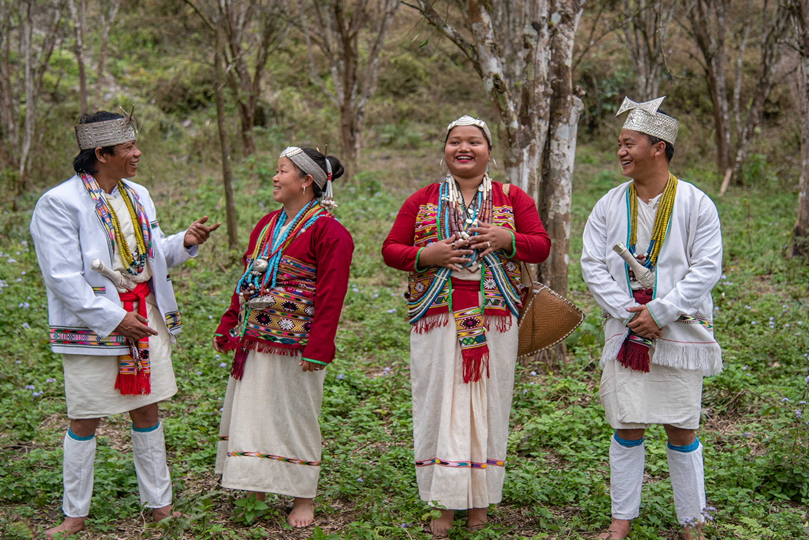
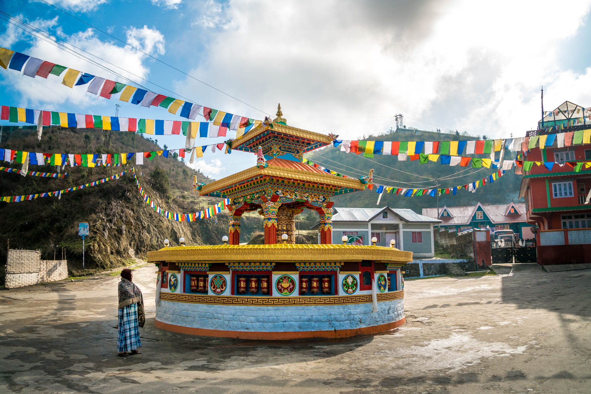

╰┈➤Arunachal Pradesh Information
| ✧ Aspect | Information |
|---|---|
| ✧ Capital | Itanagar |
| ✧ Chief minister | Pema Khandu |
| ✧ Largest City | Itanagar |
| ✧ Districts | 25 |
| ✧ Official Language | English |
| ✧ Other Language | Nyishi, Dafla, Miji, Adi, Gallong, Wancho, Tagin, Hill Miri, Mohpa, Nocte, Aka, Tangsa, Khamti. |
| ✧ Population | Approximately 1.5 million |
| ✧ Area | 83,743 square kilometers |
| ✧ Major Rivers | Brahmaputra, Siang, Lohit |
| ✧ Major Industries | Tourism, Agriculture, Handicrafts |
| ✧ Popular Places | Tawang Monastery, Ziro Valley, Namdapha National Park, Sela Pass |
╰┈➤Traditional Dresses of Arunachal Pradesh
The traditional Dresses of Arunachal Pradesh varies among its tribes. For example, the Galo tribe wears unique dresses known as 'Galo Pudum' and 'Galo Adi', while the Nyishi tribe traditionally wears 'Nyishi-Adi' attire. These traditional dresses are often adorned with intricate designs and patterns.
╰┈➤History of Arunachal Pradesh
Arunachal Pradesh, situated in the northeastern part of India, is known for its rich cultural and historical heritage. The region has been inhabited by various indigenous tribes for centuries, each contributing to its diverse tapestry of culture and traditions.
The history of Arunachal Pradesh is characterized by the migration of different ethnic groups, including the Monpas, Sherdukpens, Apatanis, and Adis, among others. These tribes have preserved their unique customs, languages, and rituals over generations.
During the medieval period, Arunachal Pradesh came under the influence of Tibetan Buddhism, which left a significant imprint on its culture and architecture. Monasteries such as Tawang Monastery stand as testament to this historical legacy.
The colonial era saw the region becoming part of the British Indian Empire, leading to the introduction of modern administrative systems. After India gained independence in 1947, Arunachal Pradesh remained a part of the North-East Frontier Agency (NEFA) until it was granted statehood in 1987.
Today, Arunachal Pradesh is known for its breathtaking natural beauty, diverse wildlife, and vibrant festivals. It continues to attract tourists and researchers alike, offering a glimpse into its rich cultural mosaic and ancient heritage.
Thank you
╰┈➤Arunachal Pradesh Pictures



